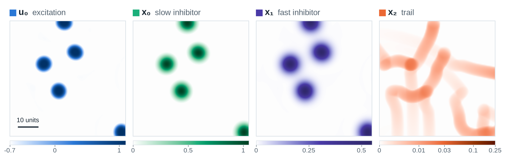
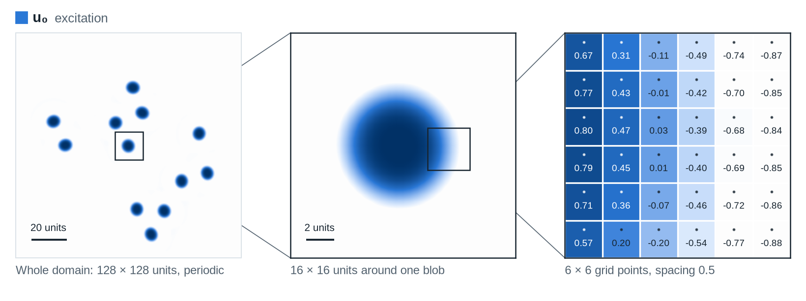
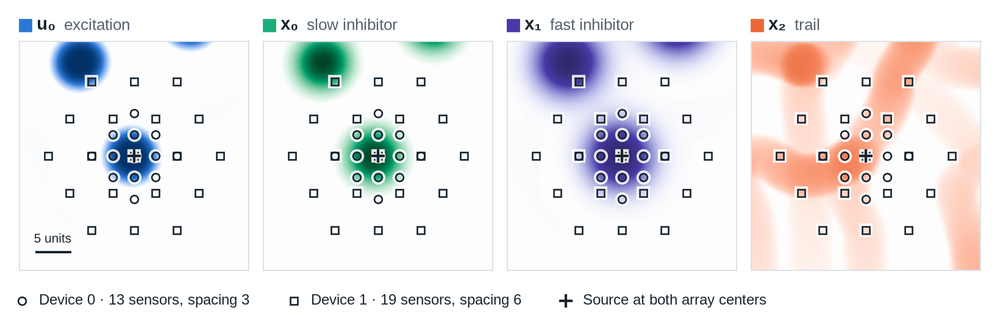
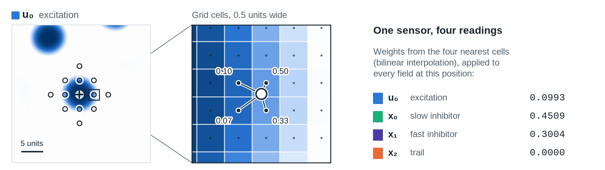

PhySim
A virtual science environment
A central challenge in using AI systems to solve problems in science is the need to interact with the world through experiments. Compared to fields like mathematics, it is likely not possible to make fundamental progress in science through thought alone. The cost of experiments, either economic or time, constrains the rate at which AI can build its understanding of physics, chemistry, and biology.
While improving experimental throughput in reality is a monumental task, we can ask what AI can learn about a virtual world where experiments can be done cheaply in-silico. PhySim was built to enable this. It defines specifications for
- Virtual worlds in which complex emergent phenomena can arise from simple rules
- An agent evaluation suite that provides tools for experimentation and tests agents’ ability to forecast world dynamics
While these worlds can be designed by hand, we also provide a package for breeding interesting worlds with an evolutionary algorithm. This combination enables us to measure model performance, use RL to improve this performance, and generate increasingly complex worlds that push models to their limits.
PhySim Worlds
PhySim worlds are built from two-dimensional fields. These fields are functions with two-dimensional domains; for every point in two-dimensional space, they define a single numerical value.

While fields are defined everywhere, when large field values concentrate in one spatial location we can think of the field as describing a localized object. In PhySim we call these objects “blobs”. The fields in BF all exhibit this behavior, with some blobs appearing as spots constrained to a single locus and others tracing out elongated paths through the domain.
Given a set of initial conditions, we evolve all the fields in time according to diffusion laws and couplings, or interactions, between fields. The laws of this evolution come from field equations which describe the rate of change of each field at each moment in space.
View the full BF field equations
Coefficients are shown at their full stored precision. Indices start at zero, as in the genome. These are the deterministic field equations; the numerical profile specifies discretization and noise, and experiments may add source forcing.
Deviations from the uniform background
Thresholded field response
Fields u
Fields x
It is convenient to think of worlds and their fields as continuous objects, but practically we simulate dynamics on a grid of discrete points. That means that, along with initial conditions, choices of grid size and spacing also affect the dynamics of a given world simulation.

Simulation settings
The native simulator uses a periodic 128 × 128 domain, a 256 × 256 grid, timestep 0.02, and float32 fields. Independent Gaussian increments of amplitude 0.002√Δt are applied to the u fields each step. Reaction is advanced with explicit Euler and diffusion in Fourier space. The BF figures and the p4g2_044 film below start from each world’s saved evaluation preparation. Only the displayed view is cropped; the complete domain is simulated. Figure and film record.
A set of fields and field equations defines the world, and a set of initial conditions and simulator settings provides a single realization of the world’s dynamics. From these basic descriptions, worlds can exhibit complex emergent phenomena such as interaction between blobs and the rise or decay of blob populations.
Experimenting with virtual worlds
In science we do not have the privilege of knowing the underlying framework behind mechanisms we observe and must develop theories which explain empirical data we collect. When building the agent evaluation suite for PhySim, we likewise chose to keep most details of the virtual worlds hidden from the agent.
Running experiments
Agents are given the following experimental apparatus:

These devices contain the following components:
Sensors: record the value of each of the fields at the sensor’s location, interpolating between nearby simulation grid points.

u = [0.2, -0.4, 0.1] from the example below.Sources: allow injecting pulses to each of the fields. The pulses are emitted from the center of the device and have a gaussian distribution with standard deviation shown in the figure.
Adjustments: the entire device can be moved in either direction within the world grid, as well as dilated.
However, the agent only sees a nondescript experimental interface:
actions = [
{"t": 1.0, "kind": "inject", "device": 0,
"port": 2, "amp": 0.7, "dur": 4.0},
{"t": 2.0, "kind": "adjust", "device": 0,
"u": [0.2, -0.4, 0.1]},
]
queries = [
{"sensor": "device0", "t": [0, 3, 12]},
{"sensor": "device1", "t": [12, 20]},
{"sensor": "global", "t": [20]},
]Each experiment consists of actions (changes to the world the agent can specify, these can be either source injections or device adjustments) and queries (readings recorded from the sensors at specified times). In addition to the two devices shown above, agents can query sensors from a global device, which records the spatial mean and variance of each field. Results from each experiment are returned in arrays.
# After laboratory_experiment(actions, queries):
# Example output in BF (four ports).
observations = np.load("/observations/experiment_001.npz")
# Axes: realization, times, ports, slots
observations["query0"].shape # (1, 3, 4, 13)
observations["query1"].shape # (1, 2, 4, 19)
observations["query2"].shape # (1, 1, 4, 2)
# 13 readings at time 3 on port 2:
observations["query0"][0, 1, 2, :]Crucially, the agent is not told anything about the structure of the world; that it exists on a 2d grid, how the devices and their sensors are set up, or even what the inputs and adjustments actually do. Likewise, sensor readouts are just opaque arrays of data with no explicit meaning attributed to them. This means that agents need to learn how the experimental apparatus works by trial and error. Think of this as being born with sense organs, but needing to learn through experience how to make use of their data streams.
This has interesting implications for interpreting agent rollouts. Agents are free to build their own world models, and the exact shape of those models does not affect how we score agents’ predictions (see below). In particular, agents may come up with diverse theoretical frameworks for describing each world, and we do not judge those frameworks on how close they are to the underlying world description we have chosen.
Making predictions
We must grade agents somehow, and choose to do this in a general way. Agents must submit a prediction function, which is able to forecast the world response to an arbitrary experiment (that is, a set of actions and queries). Agents do not know ahead of time which actions and queries we will choose to evaluate these predictions, and must build general models of world dynamics.
def predict(actions, queries, n_samples=64, seed=0):
# One array per query, in the same order.
# Shape: (n_samples, requested times, n_ports, sensor slots)
return {"samples": arrays}We allow agents to predict a set of sample outputs rather than a single output, which effectively makes predictions distributional. In addition to running experiments and submitting their final prediction function, we also supply agents with a validation tool which confirms their prediction adheres to the interface we expect. It checks execution, output format, finite values, and repeatability on public example requests. Passing those checks does not guarantee valid predictions for every possible experiment.
Evaluating agents
The full agent evaluation loop looks like this:
- Agents experiment with the world
- Agents validate (optional) and submit their final prediction function
- We measure how closely the submitted prediction function agrees with simulation for a fixed (and a priori unspecified) set of experiments
In this section, we explain how the third step works in more detail.
Even under finite time constraints simple combinatorics tell us that there are a vast number of possible experiments we could use to judge predictions. However, physical intuition tells us that the majority of these will be uninteresting. After all, worlds may exhibit localized excitations, both spatially (blobs surrounded by empty space) and temporally (worlds that undergo interesting dynamics and eventually settle into stable equilibria). For this reason, we require that any world we use for agent evaluation come equipped with a set of specific experiments which are designed to capture interesting behavior of that world’s dynamics.
For example, the blobs in BF’s field u₀ move, and as they move they leave a slowly relaxing signal in field x₂, which we call the “trail” field. Because the trail feeds back into u₀, where a blob has been can change where it goes next. One of the BF evaluation experiments, shown below, tests this directly. It injects a pulse into x₂ at the center of device 0 for five time units, and the sensors record the response for 50 time units. The pulse leaves a lasting spot in the trail, and about 20 time units after the pulse ends, the nearby blob in u₀ is pushed off that spot. To forecast this delayed response, a model must capture both what the pulse writes into x₂ and how x₂ later moves the blob.
This motivates prediction tests with different trail-pulse strengths, a pulse in another field followed by a trail pulse, and changes in device position. These tests ask whether a model captures the lasting effects of an intervention and how they alter a subsequent response.
Once we have a set of experiments built for a world, we combine them into a single score using the following recipe.
A group selects readings to score jointly, such as one field at several sensors and times. For a fixed experiment and group, divide forecast readings fik and observed readings ojk by predeclared positive scales sk in their native units:
The scales sk set the relative weight of the readings. A smaller scale makes the same absolute prediction error count more. Scales can account for expected differences in field magnitudes, or emphasize a field whose response an experiment is designed to detect. They are chosen before evaluating predictors and remain fixed for that experiment.
For these dimensionless vectors with d coordinates, define the root mean square distance:
With M predicted samples and N independent simulated realizations, the energy score for group g in experiment c is:
Average equally over the Gc groups in each experiment, then over the C experiments:
The current suites use M = 64 and N = 2. Apply the reward mapping once, to the mean energy S:
At S = 0, define RK = 1. A missing predictor or a failed prediction contract receives zero reward.
The shaping of the reward requires some explanation. The idea is to reward successive orders of magnitude of reduction in normalized prediction error. In particular, energy of 0.001 corresponds to three orders of magnitude below energy 1. K is a hyperparameter which sets the precision target for full reward. This is analogous to counting “9’s”, but energy is not a literal inaccuracy probability, and even a correct stochastic predictor can have nonzero energy.
We use K = 2, giving full reward at S ≤ 0.01. The agent’s prompt states this target; it can be varied independently of the experiment and token budgets.
Precision calibration
We generated 64 forecast samples using the actual world equations, with independent realizations of the world’s noise. These were scored against two saved simulation realizations for every experiment in all three suites. Mean energies were bf: 0.00179, xv: 0.00168, p4g2_044: 0.00125. We chose the largest integer K whose full-reward threshold is at least twice the largest simulator-based suite score. This margin applies to these preparations and measurement scales; it is not a universal precision limit. Calibration record · Recomputed model rewards.
Preliminary Results
We performed rollouts with a set of smaller models to study how agents behave in PhySim environments. All rollouts were conducted in the BF world described above, and used the Prime Agent harness. Overall performance is shown in the table below.
| Model / predictor source | Reward ↑ | Energy ↓ | Experiments | Cost |
|---|---|---|---|---|
| Qwen3.5 35B A3B | 0.000 | Invalid | 56 | $0.49† |
| Qwen3.5 397B A17B | 0.008 | 0.9622 | 214 | $0.94† |
| GPT-5.6 Luna | 0.420 | 0.1443 | 1,327 | $2.35 |
| Grok 4.6 | 0.401 | 0.1577 | 80 | $27.37†* |
| GPT-5.6 Terra | 0.260 | 0.3026 | 1,594 | $14.27 |
| Claude Sonnet 5 | 0.399 | 0.1590 | 1,600 | $14.82† |
| GLM 5.3 Flash | 0.497 | 0.1012 | 187 | $7.49†* |
Experiment record and methodology
Costs marked † are estimated from recorded tokens; unmarked costs are provider-reported. For Grok and GLM, * marks estimates that price cache reads at the full input rate because no separate rate was available. Requests without usage records are omitted. Experiments and usage include delegated work.
The table entries above average over different experimental predictions agents must make, each specific to the BF world. The heatmap below shows performance on each experiment for all models.

The smaller Qwen model scores 0 overall due to invalid predictions across 4 of the experiments tested. Most models learn to build predictors which explain the “no actions” setting well but fail to generalize to other experiments. Sonnet is the outlier in this regard, achieving worse performance in the “no actions” experiment, but a smaller generalization gap from that experiment to the more complex experiments.
What agents built
While all agents performed experiments and developed their own models for world dynamics, the complexity of those models varied across the rollouts. Several agents used experimental data to train black box models (gradient boosted trees and neural nets) to predict sensor outputs. Both GPT models and Sonnet pushed this approach the furthest, all conducting over 1000 experiments to build their training sets. Alternatively, GLM favored a less data intensive approach, which resulted in stronger inductive biases and a less complex model that still performed well in the experiments evaluated. Full details of the submitted prediction functions can be seen here.
Discovering new worlds
While the task above is already non-trivial, we believe PhySim environments can be made far more challenging if we can generate more complex worlds. To discover equations that gave rise to more complex behavior we applied an evolutionary algorithm which selected for interesting behavior and bred worlds by combining their fields and adding couplings between them.
See details of the evolutionary world search
- Initialize. Begin with a population of field genomes and a seeded random generator.
- Vary. Mutate numerical parameters or field structure. To combine two parents, first join their field systems, then share a feedback field, add cross-couplings, or introduce a slowly relaxing field driven by both parents.
- Simulate and measure. Reject unsupported or unstable candidates. Simulate the remainder and calculate metrics in Python, such as persistence, movement, spatial organization, and interactions. Selection uses these measurements, not an LLM judge.
- Select and repeat. A recipe converts the metrics into fitness and chooses survivors and parents for the next generation. Recipes can define their own metrics and selection rules; the packaged default retains the highest-scoring distinct genomes.
- Preserve. Harvest selected worlds with their genomes, recipe, seeds, parentage, metrics, and checkpoints in the registry.
Search implementation · Mutation and merge operations · Example recipe
We package the simulation tools along with the world breeding algorithm into a package called Blobkit. Since the evolutionary search is constrained by simulation throughput, we also include accelerated simulation code to run multiple worlds in parallel.
An example of what this process produced is the world we call “p4g2_044”. This world is described by twelve fields and produces dynamics far richer than BF. It was found in the second generation of the evolutionary search we ran. Highlights of the world dynamics are illustrated below.
View the full p4g2_044 field equations
Coefficients are shown at their full stored precision. Indices start at zero, as in the genome. These are the deterministic field equations; the numerical profile specifies discretization and noise, and experiments may add source forcing.
Deviations from the uniform background
Thresholded field response
Fields u
Fields x
What’s next?
The evaluations above serve as a proof of concept for PhySim. We think there are many ways to extend this work. We’d like to run more evaluations on the most capable models available now to see how well they do on worlds like BF. We would also like to put more effort and research into how to build complex worlds. In particular, it would be interesting to see what sorts of worlds can be produced with larger budgets for evolutionary search, and what sorts of selection metrics produce results that most closely align with what humans perceive as “interesting”.
The most interesting question may be what role environments for virtual science might play in the overall development of AI for science. While predicting the future of this technology is best left to the experts, we can try to reason from first principles about the inputs and outputs to scientific research and make the following conclusions:
- Scientific progress will be bottlenecked by experimental throughput
- To optimize this bottleneck, systems will need full flexibility to design new experimental methodologies
- Our theoretical models for the natural world will be judged not only by their epistemic value, but also their ability to increase experimental throughput (simulation).
Get Involved
Interested in collaborating on this project?
- World contribution guide if you want to build or grow your own PhySim worlds
- PhySim GitHub if you want to explore the libraries supporting PhySim
- Prime Intellect environments if you want to contribute to the agent evaluation and training environments
- @the1pun1isher if you just think the project is cool and want to get in touch
Credit
This work was done as part of Prime Intellect’s RL residency. I would like to thank Prime Intellect for supporting the compute and token costs of this work, as well as @omouamoua for organizing this residency cohort and for all his input and feedback on this project. PhySim was partially inspired by @patience_cave’s work on MazeBench (be sure to check it out, it’s awesome). I’m also thankful to Yajit for many discussions on AI, agents, and science which have shaped parts of this work.